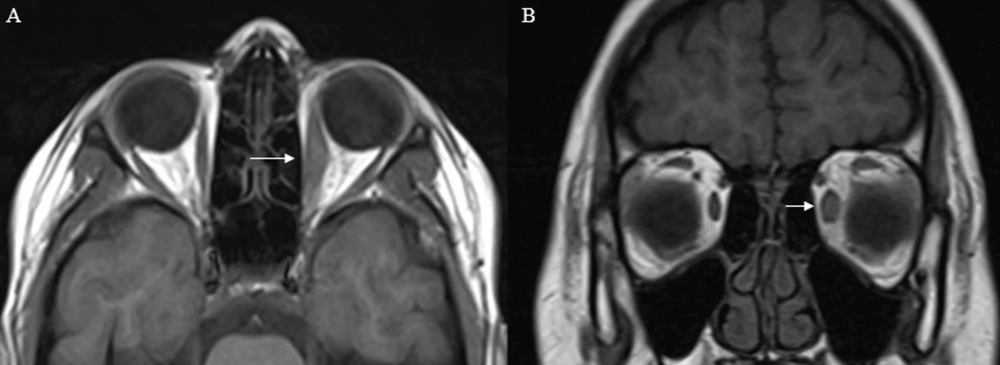

422 — Cellulitis vs giả u viêm / Orbital cellulitis vs Pseudotumor (myositis)
Tags: pattern:viem-hoc-mat vung:hoc-mat
Mức chắc chắn (certainty): tổng hợp y văn (literature synthesis) — nhóm tự biên từ y văn mở, chưa gắn ca nguyên văn đơn lẻ.
1. Tổng quan — gân là ranh giới + đáp ứng steroid 48 giờ
- Viêm cơ vô căn (myositis/giả u): phì đại cơ hình thoi CẢ GÂN (tendon-involving), đau khi vận nhãn, đáp ứng steroid nhanh 24–48 giờ. Định lượng: cơ dày gấp ~2× bên lành (7,4 vs 3,8 mm trong ca dưới).
- Cellulitis sau vách: sốt + viêm xoang kề + phù lan, trẻ em — kháng sinh TM; áp-xe (mức dịch-khí) thì dẫn lưu.
- TẠI SAO kháng sinh không đỡ thì nghĩ giả u: viêm vô khuẩn không đáp ứng kháng sinh; sốt + xoang mờ + bạch cầu tăng ủng hộ nhiễm khuẩn.
2. Gamut mắt đỏ đau + cơ to/sưng hốc mắt
- Cellulitis: sốt + xoang mờ + trẻ + phù lan — kháng sinh, tìm áp-xe.
- Giả u/myositis: đau vận nhãn + cả gân + không sốt/xoang sạch — steroid.
- Graves: chừa gân + 2 bên + TRAb (bài 421).
- IgG4/sarcoid/GPA: tuyến lệ + đa cơ quan + IgG4/ACE/ANCA (nối bài 424/451).
3. Bảng so sánh
| Thực thể (entity) | Hình ảnh (CT/MRI) | Chốt vào (rule-in) | Chốt loại (rule-out) | Gợi ý xác nhận |
|---|---|---|---|---|
| Giả u/myositis | Cả gân, 1 cơ/bên, không xoang mờ | Đau vận nhãn + cả gân + đáp ứng steroid 48h | Sốt + xoang mờ → cellulitis | Steroid + MRI lại |
| Cellulitis | Phù lan + xoang mờ + áp-xe (mức dịch) | Sốt + xoang + bạch cầu tăng | Không sốt + xoang sạch + không đỡ KS → giả u | Kháng sinh TM, dẫn lưu áp-xe |
| Graves | Chừa gân, 2 bên, T2 sáng | Chừa gân + TRAb (bài 421) | Trực ngoài đơn độc (I'M SLOW) hoặc cả gân + đau → giả u/lymphoma | (bài 421) |
| IgG4 | Tuyến lệ + cơ + đa cơ quan | IgG4 máu/mô + đa cơ quan | Đơn cơ cấp + đáp ứng nhanh → giả u | IgG4, sinh thiết |

T1 axial/coronal: cơ thẳng trong trái to cả gân. Nguồn: Flindris et al., Cureus 2026 Fig. 4, CC BY 4.0.4. Protocol
- CT/MRI hốc mắt: cơ (thân/gân), xoang (mờ/áp-xe), đỉnh, tuyến lệ; đo dày cơ 2 bên (mm).
- Không sốt + xoang sạch + cơ to cả gân → steroid sớm (đừng kháng sinh kéo dài vô ích).
- Áp-xe/biến chứng nội sọ: hội chẩn TMH + ngoại thần kinh.
5. Cạm bẫy
- Trẻ em cellulitis giả u và ngược lại: trẻ sốt + xoang mờ = cellulitis đến khi chứng minh ngược lại (nguy hiểm hơn nếu bỏ sót).
- Lymphoma/nhiễm nấm giả viêm mạn — không đáp ứng steroid + tuổi già/suy giảm MD → sinh thiết.
- Graves 1 bên giai đoạn sớm giả u — TRAb + theo dõi bên kia.
6. Tự lượng giá — Blind Quiz
Ca 1 — Đau vận nhãn + cơ thẳng trong trái to. Đo và kết luận.
- Hỏi: dày bao nhiêu vs bên lành? Gân có to không? Xoang có mờ không? Chẩn đoán + thuốc gì?
Bấm để hiện đáp án
- Viêm cơ vô căn: 7,4 vs 3,8 mm + cả gân + xoang sạch + không sốt — steroid đáp ứng 48 giờ (khác cellulitis).
- Nguồn: Flindris et al., Fig. 4, CC BY 4.0.
Ca 2 — Trẻ sốt + sưng mi + xoang hàm mờ + phù lan: kháng sinh hay steroid đầu? Vì sao? (Bảng mục 3.)
Bấm để hiện đáp án
- Cellulitis: kháng sinh TM đầu (sốt + xoang + trẻ) — tìm áp-xe để dẫn lưu; steroid chỉ khi loại trừ nhiễm khuẩn.
Bài liên quan chéo
- 400 – Tổng quan Mắt
- 410 – Giải phẫu hốc mắt (thân/gân cơ)
- 421 – Lồi mắt Graves (chừa gân)
- 424 – Tuyến lệ (đã có) (IgG4)
Không dùng để chẩn đoán độc lập khi chưa có người hướng dẫn.